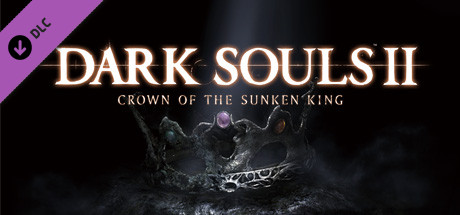
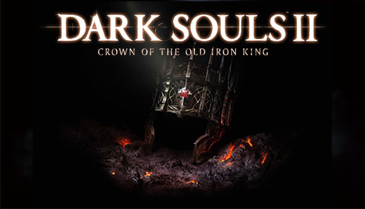
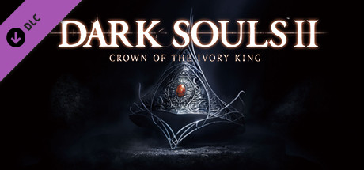

Dark Souls 2 Downloadable content
Crown of the Sunken King
The first of the three DLCs, Crown of the Sunken King, was released on July 22, 2014. The DLC takes place in the Sunken King's kingdom of Shulva, and centers around the player's search for the crown of the Sunken King.
Crown of the Old Iron King
The second of the three DLCs, Crown of the Old Iron King, was released on August 26, 2014. The DLC takes place in the Old Iron King's kingdom of Brume Tower, and centers around the player's search for the crown of the Old Iron King.
Crown of the Ivory King
The third of the three DLCs, Crown of the Ivory King, was released on September 30, 2014. The DLC takes place in the Ivory King's kingdom of Eleum Loyce, and centers around the player's search for the crown of the Ivory King.